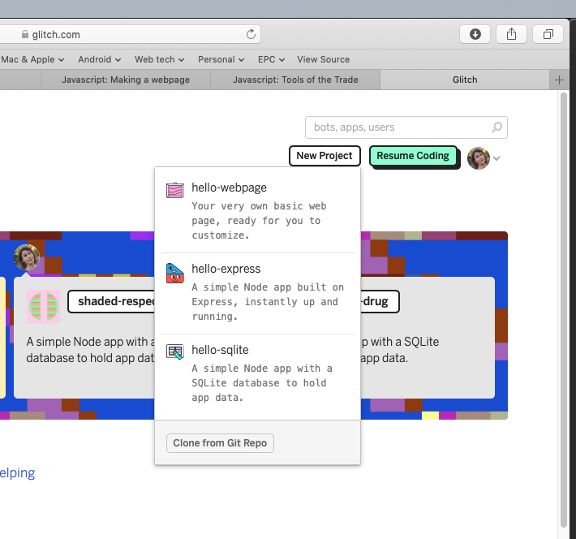
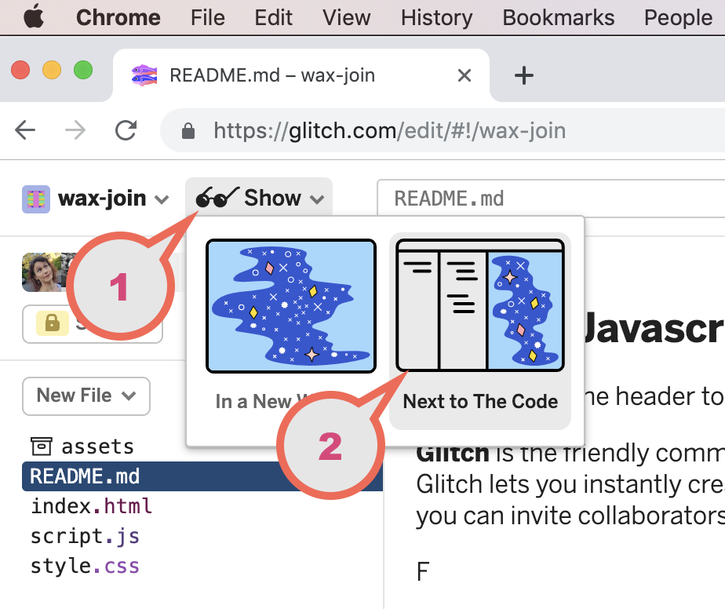
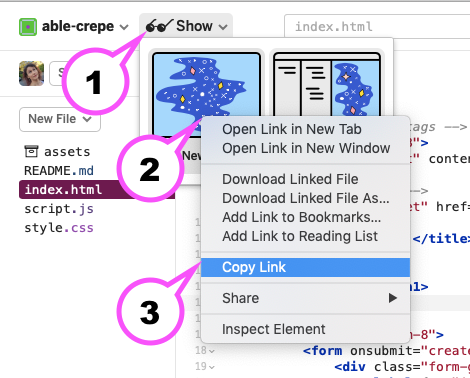
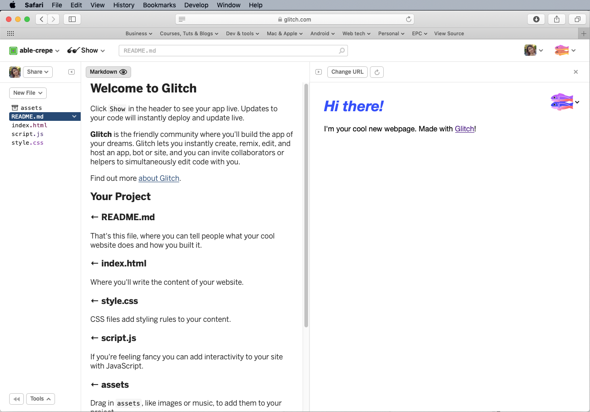

Part 0 - Jump in & Build
Part 1 - Foundations
- 4 - Variables
- 5 - Operators
- 6 - Functions
- 7 - Conditional Statements
- 8 - Arrays
- 9 - Loops
- 10 - Exercise: FizzBuzz
- 11 - Congratulations
Part 2 - The Browser
Useful Links
Step 1 - Making a webpage
We are going to be learning about JavaScript by using it in web pages. This is the most common use of JavaScript.
To do that we will create a very simple webpage and use it to load up our Javascript in the browser.
So what actually is a web page?
It’s just a text file with two different types of content in it.
- text content, ie the actual words that will be displayed
- HTML tags, which tell the browser how the content is supposed to be displayed.
Like most programming languages Javascript as a programming environment has a part that shows an interface - just a fancy word for the screen - and another part that handles the logic.
For web applications we use Javascript for the logic, and html along with style-sheets to make the interface. The interface is the buttons, labels and boxes to type into; and the javascript tells the web application what to do when we tap the button or type in the box.
It’s time to use the Glitch online coding platform to start creating your web-app. Remember that normally you’d do this in a desktop editor but to save time we’re using an online editor tonight.
Create an app for this workshop.
Go to glitch.com and hit the New Project button.
Choose hello-webpage for the type.

After a short time Glitch has created your project with some placeholder content, including a number of files.
We can already view this project in our browser to see what it looks like. Note the name that Glitch has generated for your project - it will be two short words joined by a hyphen. Mine is called wax-join but yours will be some other name.
When its done creating view it like this:

- Click the Show menu
- Click the Next to the code tab
- Make sure you bookmark your new project eg press ⌘D
- Recommended: “Sign in” (top right)
Signing in will make it much easier to save & protect your project & find it again.
What is a web server?
Wow. Building a web page is easy right? Isn’t it just like making a word document?
Well, no - because you need a web server to make it really a web page. So… what is a web server?
Its just a computer - like your laptop, but its always powered on & running 24/7, and its always connected to the internet, so that people can connect to it from all over the world. That’s what makes it a world-wide-web server.
There are computer professionals whose whole entire job is just keeping these server computers running, and making sure there is enough servers for everyone who is trying to connect. Imagine how many servers you need for somewhere like Google - which has thousands of people connecting every second.
Luckily with Glitch we can edit the page, right on the same web-server that we use to edit the code. Pretty handy.
Create an app for this workshop.
To prove your new page really is on a web server, do the following:

- Click the Show menu
- Right-click the In a new Window pane
- Choose Copy link
- Open that link up in a new web browser window. It will be eg wax-join.glitch.me
- Now type that link into your phone’s web browser.
Even though you built the page in your desktop browser there it is - available in your phone! And your phone could be anywhere in the world. Try texting a friend and ask them to open your brand new page. Ask them what they think!
Structure of a Web App
In a mobile application like a native iOS app or an Android app, or a native application on your laptop computer the interface of that app is defined by special layout files. In Android they’re actually XML files that are not too different from the HTML file here in your glitch project.
Typically web apps try to seperate the User Interface definition from the logic of the application itself and its styling is seperated yet again. Its just the same here in the glitch app.
Open each file in your Glitch editor
First up go to the settings for your project (click the project name top-left) and turn off the Refresh app on
changes setting check box. We want to be able to refresh manually.
Examine the content of each of the files in your project. You should see:

- assets
- README.md
- index.html
- script.js
- style.css
The first one is not a file, but a special folder that Glitch uses to help upload content to serve along with your web project. Have a guess at what the others are, and what they do. Try making some small changes & see what happens to the web-page that should be displayed on the right. Try changing where it has:
<h1>Hi there!</h1>
so it reads
<h3>A Quieter Hello...</h3>
You’ll have to tap the refresh button in the right hand pane to see the results.
What happens if you leave the trailing </h3> off?
So what’s HTML?
HTML stands for HyperText Markup Language, and it is the language that webpages are written in. It’s the stuff in a webpage that you don’t see displayed which the browser uses to know how it is supposed to show everything else.
Unlike a programming language, a markup language isn’t a series of instructions but instead it is a way of describing something. In the case of HTML it describes how content should be displayed in a web browser.
HTML is made up of what we call tags. Tags are how we tell the browser what type of content something is in a page.
Lets look at the example above, specifically the line:
<h1>Hi there!</h1>
The content here is the text Hi there! and it is “marked-up” with the h1 tag. By marked-up we mean that this piece of text is preceded by an opening tag <h1> and following by the corresponding closing tag </h1>is a Header tag.
There are around 120 tags defined in the current version of HTML (version 5) but many of those are for very specific cases.
Lets look at some of the tags in the example code generated by Glitch:
<html>- The root element that contains any other tags<head>- Tells the browser additional information about the webpage<title>- Sets the description on the tabs in the browser window to help you navigate between different pages<body>- All of your content has to be contained within this tag.<h1>- Level 1 heading. There are six levels of headings,<h1>through to<h6>.<p>- a paragraph
Building a Web App
We’re going to be building a very small web application. That’s a computer program that exists on the internet, and can be viewed from anywhere via a browser.
Usually web-apps (as they’re known) save their state so that no matter where you visit them from - your phone, or on your desktop; from Australia or Austria - the content always persists. This is done using server computers that are connected to a database. The server computer has the job of serving up the user experience - which is usually HTML and CSS; while the server queries the database to find the persistent content to be shown in those pages.
Take a look at Twitter.com. It has a certain look and feel, and the content is always different from day to day. However if I view it on my phone & on my desktop at the exact same time I will see the same thing.
For the app we are going to build we are not quite going to get to that last step of making our app persist its data to a database. But you can do it with the skills we’ll learn today after the workshop is finished.
In fact Glitch.me has a database backed app template that you can access - right when you clicked “New Project” and chose hello-webpage, you can also choose hello-sqlite to make a database backed web app.
That is in a stretch goal in the last part of this workshop.
However we’ll get most of the way there to our web application. Let’s get started.
Make the UI for our ToDo app
For our webpage we’re going to use some cool free presentation technology called Bootstrap that helps web developers make nice responsive user-interfaces for web-applications.
- Browse to https://getbootstrap.com
- Click the
Get startedbutton - Click
Starter templateat the top right - Click the ‘copy’ button at the top right of the HTML code window
Now you have copied Bootstraps starter template. You’re ready to make your first web app.
- Go back to your Glitch editor tab in your browser
- Click in
index.htmland in existing HTML code & press ⌘-A orEdit > Select All. - Paste in your new Bootstrap template code, overwriting Glitches starter template.
When you refresh your page in Glitch you’ll see just the title Hello World.
How does Javascript, HTML and CSS work?
What did the Bootstrap template do for us? Things don’t look so impressive yet, right?
Have a look at this Bootstrap HTML below and see how it provides us with ready to use components like the container and row:
<div class="container">
<h1>My To Do List</h1>
<div class="row">
<div class="col-sm-8">
<form>
<div class="form-group">
<label for="inputToDo">To-do Item</label>
<input type="text" class="form-control" id="inputToDo"
aria-describedby="todoHelp" placeholder="Enter to-do item text" />
<small id="todoHelp" class="form-text text-muted">Describe what you want to get done.</small>
</div>
<span class="btn btn-primary">Submit</span>
</form>
</div>
<div class="col-sm-4">
<ul id="toDoListDisplay" class="list-group">
<li class="list-group-item">Hit the gym</li>
<li class="list-group-item">Pay bills</li>
<li class="list-group-item">Meet George</li>
<li class="list-group-item">Buy eggs</li>
<li class="list-group-item">Read a book</li>
<li class="list-group-item">Organize office</li>
</ul>
</div>
</div>
</div>
Here the container and col-sm-8 are Bootstrap grid components, used to layout your app on the page. This works regardless of if you’re on a desktop or mobile. We call this responsive and its how web apps should be.
Create a responsive UI
- Copy-and-paste the code above into your web page
- Place it just under the
<h1>Hello, World</h1> - Tap the refresh button to see the results.
- You should get a column of to-do items, a form field and a button.
- Try typing in the form-field and pressing the button.
- Nothing happens. But it looks great already, right?
- The best part: view it in your phone’s web-browser.
- Click the Show menu
- Right-click the In a new Window pane
- Choose Copy link
- Open that link up in a new web browser window.
- Now type that link into your phone’s web browser.
- Note how the UI changes to fit the phone?
- Neat, hey?
Notice that in the <head> section of your index.html you have a line that mentions Bootstrap CSS - that is fetching Bootstrap’s cascading style sheets and applying them to your page.
Find that line that start with <link rel="stylesheet" and delete it. Its OK, Glitch will let you get it back.
Now you not only don’t get the cool mobile friendly experience, it looks decidedly 1990’s as well! That is the power of CSS.